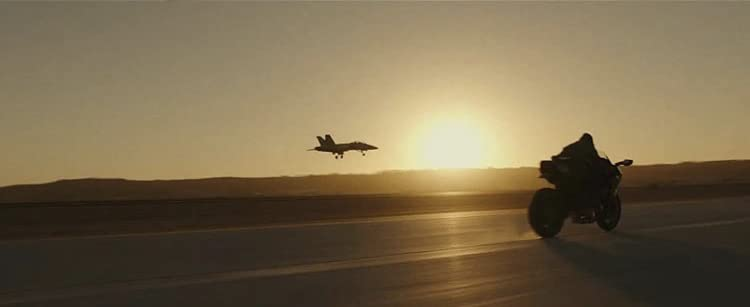
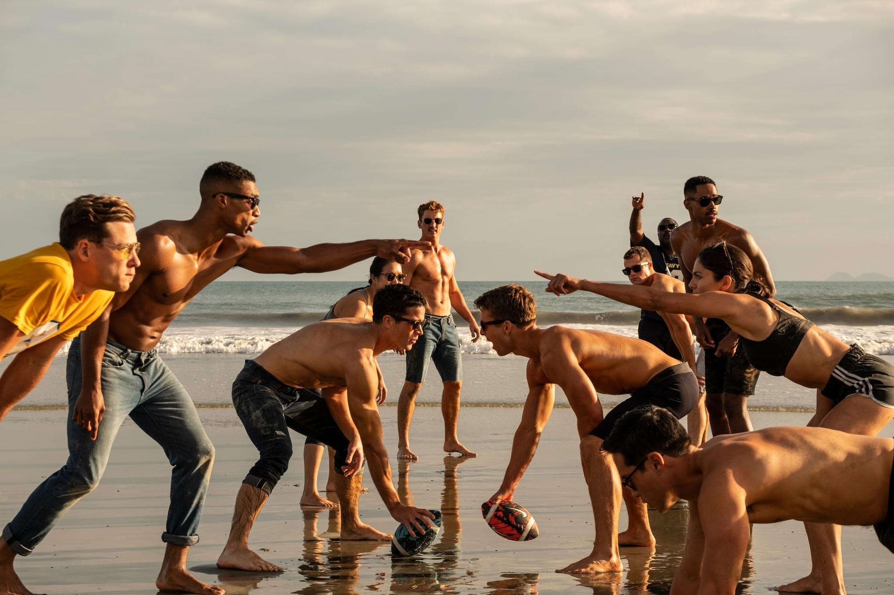

- Directed by Joseph Kosinsky
- Starring
- Tom Cruise
- Miles Teller
- Glen Powell
- Jennifer Connelly
- Jon Hamm
- Ed Harris
- Charles Parnell
- AND Val Kilmer
Well, dear Reader, I did it. I went late at night to a cinema to see ‘Top Gun: Maverick’. I thought it’s so late for me, I’ll go to sleep. And, I thought, I don’t like Tom Cruise. Also, I couldn‘t remember fully, but I didn’t think I liked the first, ‘Top Gun’ movie.
But 2 hours and 11 minutes later, I was still wide awake, I was cheering inside, I had a spring in my step as I climbed the steps to leave the theatre. And I can tell you ‘Top Gun: Maverick’ is great with a capital G. It is a revelation. This is a massive achievement for all concerned and deserves all the accolades it gets.
Love him or hate him – Tom Cruise is good, very, very, good. The film is his, he drives it every inch of the way from his first appearance to the final credits.
 The bike is really quick. Or the plane is really slow.It seems the big men at the top want to stop Maverick from flying. They want him to take a long overdue promotion which will ensure he can’t go up again. He will become an educator, a trainer to young fighter pilots. Maverick will not accept this ‘demotion’ but must go along with it. Enter his young team. Eager, attractive men and one lone female. They are all made of the ‘Right Stuff’ and they are reminiscent of their predecessors in the first outing.
 Can you imagine if all your classes were in airport hangers?
Can you imagine if all your classes were in airport hangers?
A secret mission is announced, and Maverick is charged with training his pilots to undertake the most hair-raising adventure, to take out a nuclear regeneration plant behind foreign lines. The resultant air sequences are amazing to say the least and continue until the end of the film. All credit to the visual effects people throughout the movie.
So much happens from here on in, the tension is tremendous the driving forward of the narrative, at all times, is impressive. There are a few scenes where the protagonists relax, but they are few and far between. We are in a full-on suspense driven ride.
 There are three people in this picture wearing jeans. At the beach. Did they not know they were going to the beach?!? Who wears jeans to the beach?!?The casting is excellent. Apart from Tom Cruise, we have Miles Teller as Rooster and Glen Powell as Hangman. Both play integral roles as the drama unfolds. Particularly, Miles Teller, who plays the son of Goose Bradshaw from the first movie, [Maverick has pledged to Goose’s widow that he will always protect Rooster], this pledge causes antagonism between him and Maverick.
Ed Harris is on board as an angry old admiral who dislikes Maverick and his ways. Jon Hamm is excellent as the vice-admiral with a level head on his shoulders. Charles Parnell as Rear Admiral Bates, plays with great authority, we remember him with affection from ‘The Last Ship’. Jennifer Connelly, looking magnificent, is now the owner of the bar and provides Maverick with some tender loving care. And finally, we have Val Kilmer, as Iceman Kazansky, the Commander of the U.S. Pacific Fleet. Their one scene together is memorable, Cruise and Kilmer are at their best here. This scene will be remembered for all time.
 Jennifer appears to trust Tom a lot more on a motorbike than I would. We all saw him crash in Oblivion, right?
Jennifer appears to trust Tom a lot more on a motorbike than I would. We all saw him crash in Oblivion, right?
So, dear readers, what can I say, I will see it again, and I urge all of you to go out to a cinema with a big screen and enjoy this experience.
Star Rating: 5/5 A great cinematic triumph. All hail Mr Cruise. - A great cinematic triumph. All hail Mr Cruise.